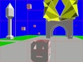
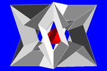
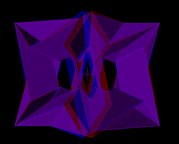

MKI 3D RAPID MODELER
Author: mki1967. Project can be found on: https://github.com/mki1967/mki3d
MKI 3D RAPID MODELER is a keyboard-driven open-source web application for creating simple 3D models consisting of colored line segments and triangles.
The designed shapes can be also exported to stand-alone HTML WebGL pages and displayed with accompanying mki3d_view.js script. See this example exported HTML page and more examples here.
- RUN IN ARBITRARY BROWSER (You can use it both on-line and off-line. See more info here.)
- With the use of text areas, you can distribute your simple designs without even using files on local machine. Here is some data copy-pasted to a Gist with a comment how to load it.
-
 Link for installation of mki3d from Chrome Web Store.
Link for installation of mki3d from Chrome Web Store.
- Go programmers can use packages in https://github.com/mki1967/go-mki3d to load and display (with go-gl) the data produced by MKI3D. As a working example you can find mki3dgame in https://github.com/mki1967/test-go-mki3d . (Here is a short demo screen-cast on YouTube  .)
- Mki3d has been used for designing the stages of Android app: MKI Searching Game 
- Click here to see some stereoscopic screen-shots: 
You may want to see some general notes about the application.